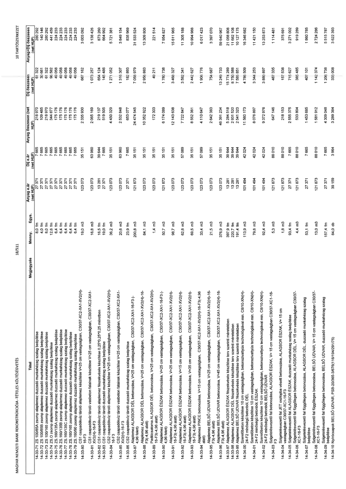

| Tétel | Megjegyzés | Menny. | Egys. | Anyag e.ár (net HUF) | Díj e.ár (net HUF) | Anyag összesen (net HUF) | Díj összesen (net HUF) | Anyag+Díj összesen (net HUF) |
|---|---|---|---|---|---|---|---|---|
| 14-33-71 ZS 100/85A zsomp alaplemez duzzadó munkahézag szalag beépítése | NaN | 8,0 | fm | 27 371 | 7 665 | 218 970 | 61 322 | 280 292 |
| 14-33-72 ZS 100/85B zsomp alaplemez duzzadó munkahézag szalag beépítése | NaN | 4,0 | fm | 27 371 | 7 665 | 109 485 | 30 661 | 140 146 |
| 14-33-73 ZS 100/165 zsomp alaplemez duzzadó munkahézag szalag beépítése | NaN | 8,0 | fm | 27 371 | 7 665 | 218 970 | 61 322 | 280 292 |
| 14-33-74 ZS.O zsomp alaplemez duzzadó munkahézag szalag beépítése | NaN | 12,6 | fm | 27 371 | 7 665 | 344 877 | 96 582 | 441 459 |
| 14-33-75 ZS.160/135A zsomp alaplemez duzzadó munkahézag szalag beépítése | NaN | 6,4 | fm | 27 371 | 7 665 | 175 176 | 49 058 | 224 233 |
| 14-33-76 ZS.160/135B zsomp alaplemez duzzadó munkahézag szalag beépítése | NaN | 6,4 | fm | 27 371 | 7 665 | 175 176 | 49 058 | 224 233 |
| 14-33-77 ZS.160/135C zsomp alaplemez duzzadó munkahézag szalag beépítése | NaN | 6,4 | fm | 27 371 | 7 665 | 175 176 | 49 058 | 224 233 |
| 14-33-78 ZS.160/165 zsomp alaplemez duzzadó munkahézag szalag beépítése | NaN | 6,4 | fm | 27 371 | 7 665 | 175 176 | 49 058 | 224 233 |
| 14-33-79 ZS.160/90 zsomp alaplemez duzzadó munkahézag szalag beépítése | NaN | 6,4 | fm | 27 371 | 7 665 | 175 176 | 49 058 | 224 233 |
| 14-33-80 CS1 csapadékvíz tároló alaplemez készítése V=25 cm vastagságban, C30/37-XC2-XA1(H)-16-F3 | NaN | 19,0 | m3 | 123 073 | 35 151 | 2 335 930 | 667 162 | 3 003 092 |
| 14-33-81 CS1 csapadékvíz tároló vasbeton falak készítése V=25 cm vastagságban, C30/37-XC2-XA1-XV2(H)-16-F3 | NaN | 16,8 | m3 | 123 073 | 63 960 | 2 065 169 | 1 073 257 | 3 138 426 |
| 14-33-82 CS1 csapadékvíz tároló alaplemez fészekvésés készítése 0,25*0,25*0,25 méretben | NaN | 16,5 | fm | 13 281 | 39 544 | 219 137 | 652 476 | 871 613 |
| 14-33-83 CS1 csapadékvíz tároló duzzadó munkahézag szalag beépítése | NaN | 19,0 | fm | 27 371 | 7 665 | 519 505 | 145 486 | 664 992 |
| 14-33-84 CS2 csapadékvíz tároló alaplemez készítése V=25 cm vastagságban, C30/37-XC2-XA1-XV2(H)-16-F3 | NaN | 35,2 | m3 | 123 073 | 35 151 | 4 450 329 | 1 271 052 | 5 721 381 |
| 14-33-85 CS2 csapadékvíz tároló vasbeton falak készítése V=25 cm vastagságban, C30/37-XC2-XA1-XV2(H)-16-F3 | NaN | 20,6 | m3 | 123 073 | 63 960 | 2 532 848 | 1 316 307 | 3 849 154 |
| 14-33-86 CS2 csapadékvíz tároló duzzadó munkahézag szalag beépítése | NaN | 23,9 | fm | 27 371 | 7 665 | 653 077 | 182 893 | 835 969 |
| 14-33-87 Alaplemez ALAGSOR DÉL betonozása, V=25 cm vastagságban, C30/37-XC2-XA1-16-F3 (-4,96 alatt) | NaN | 200,8 | m3 | 121 873 | 35 151 | 24 474 545 | 7 058 979 | 31 533 524 |
| 14-33-88 Alaplemez ALAGSOR DÉL betonozása, V=25 cm vastagságban, C30/37-XC2-XA1-XV2(H)-16-F3 (-4,96 alatt) | NaN | 84,1 | m3 | 123 073 | 35 151 | 10 352 922 | 2 956 883 | 13 309 806 |
| 14-33-89 Padlócsatorna ALAGSOR DÉL betonozása, V=25 cm vastagságban, C30/37-XC2-XA1-XV2(H)-16-F3 (-4,96 felett) | NaN | 1,4 | m3 | 123 073 | 35 151 | 172 303 | 49 211 | 221 514 |
| 14-33-90 Alaplemez ALAGSOR ÉSZAK betonozása, V=25 cm vastagságban, C30/37-XC2-XA1-16-F3 (-4,96 felett) | NaN | 50,7 | m3 | 121 873 | 35 151 | 6 174 069 | 1 780 758 | 7 954 827 |
| 14-33-91 Alaplemez ALAGSOR ÉSZAK betonozása, V=25 cm vastagságban, C30/37-XC2-XA1-XV2(H)-16-F3 (-4,96 felett) | NaN | 98,7 | m3 | 123 073 | 35 151 | 12 143 638 | 3 468 327 | 15 611 965 |
| 14-33-92 Alaplemez ALAGSOR ÉSZAK betonozása, V=15 cm vastagságban, C30/37-XC2-XA1-XV2(H)-16-F3 (-4,96 felett) | NaN | 62,8 | m3 | 123 073 | 57 089 | 7 722 847 | 3 580 341 | 11 303 188 |
| 14-33-93 Alaplemez ALAGSOR ÉSZAK betonozása, V=34 cm vastagságban, C30/37-XC2-XA1-XV2(H)-16-F3 (-4,96 alatt) | NaN | 69,5 | m3 | 123 073 | 35 151 | 8 552 381 | 2 442 627 | 10 994 988 |
| 14-33-94 Alaplemez PINCE betonozása, V=15 cm vastagságban, C30/37-XC2-XA1-XV2(H)-16-F3 (-4,96 alatt) | NaN | 33,4 | m3 | 123 073 | 57 089 | 4 110 647 | 1 906 776 | 6 017 423 |
| 14-33-95 Alaplemez BELSŐ UDVAR betonozása, V=25 cm vastagságban, C30/37-XC2-XA1-XV2(H)-16-F3 (-4,96 alatt) | NaN | 21,5 | m3 | 123 073 | 35 151 | 2 642 383 | 754 687 | 3 397 070 |
| 14-33-96 Alaplemez BELSŐ UDVAR betonozása, V=45 cm vastagságban, C30/37-XC2-XA1-XV2(H)-16-F3 (-4,96 alatt) | NaN | 376,9 | m3 | 123 073 | 35 151 | 46 391 234 | 13 241 733 | 59 632 967 |
| 14-33-97 Alaplemez ALAGSOR ÉSZAK fészekvésés készítése terv szerinti méretekben | NaN | 397,9 | fm | 13 281 | 39 544 | 5 284 518 | 15 777 289 | 21 058 808 |
| 14-33-98 Alaplemez ALAGSOR DÉL fészekvésés készítése terv szerinti méretekben | NaN | 220,7 | fm | 13 281 | 39 544 | 2 931 520 | 8 751 588 | 11 682 108 |
| 14-33-99 Alaplemez BELSŐ UDVAR fészekvésés készítése terv szerinti méretekben | NaN | 191,4 | fm | 13 281 | 39 544 | 2 541 323 | 7 581 851 | 10 127 175 |
| 14-34-00 Szerelőbeton készítése 10 cm vastagságban, betonszivattyús technológiával min. C8/10-XN(H)-24-F2 minőségű betonból, ALAGSOR DÉL | NaN | 113,9 | m3 | 101 494 | 42 024 | 11 560 173 | 4 786 509 | 16 346 682 |
| 14-34-01 Szerelőbeton készítése 10 cm vastagságban, betonszivattyús technológiával min. C8/10-XN(H)-24-F2 minőségű betonból, ÉSZAK | NaN | 79,6 | m3 | 101 494 | 42 024 | 8 078 897 | 3 345 253 | 11 421 150 |
| 14-34-02 Szerelőbeton készítése 10 cm vastagságban, betonszivattyús technológiával min. C8/10-XN(H)-24-F2 minőségű betonból, BELSŐ UDVAR | NaN | 92,4 | m3 | 101 494 | 42 024 | 9 372 976 | 3 881 897 | 13 253 873 |
| 14-34-03 Szigetelésvezető fal betonozása, ALAGSOR ÉSZAK, V= 15 cm vastagságban C30/37 XC1-16-F3 | NaN | 5,3 | m3 | 121 873 | 88 010 | 647 146 | 467 335 | 1 114 481 |
| 14-34-04 Szigetelésvezető fal JET oszlopba vésett betonozása, ALAGSOR ÉSZAK, V= 15 cm vastagságban C30/37 XC1-16-F3 | NaN | 1,8 | m3 | 121 873 | 88 010 | 218 153 | 157 538 | 375 691 |
| 14-34-05 Szigetelésvezető fal ALAGSOR ÉSZAK, duzzadó munkahézag szalag beépítése | NaN | 93,4 | fm | 27 371 | 7 665 | 2 555 375 | 711 627 | 3 271 002 |
| 14-34-06 Szigetelésvezető fal függőleges betonozása, ALAGSOR DÉL, V= 15 cm vastagságban C30/37-XC1-16-F3 | NaN | 4,4 | m3 | 121 873 | 88 010 | 533 804 | 385 485 | 919 289 |
| 14-34-07 Szigetelésvezető fal függőleges betonozása, ALAGSOR DÉL, duzzadó munkahézag szalag beépítése | NaN | 53,1 | fm | 27 371 | 7 665 | 1 453 685 | 407 101 | 1 860 785 |
| 14-34-08 Szigetelésvezető fal függőleges betonozása, BELSŐ UDVAR, V= 15 cm vastagságban C30/37-XC1-16-F3 | NaN | 13,0 | m3 | 121 873 | 88 010 | 1 581 912 | 1 142 374 | 2 724 286 |
| 14-34-09 Szigetelésvezető fal függőleges betonozása, BELSŐ UDVAR, duzzadó munkahézag szalag beépítése | NaN | 157,4 | fm | 27 371 | 7 665 | 4 309 048 | 1 206 738 | 5 515 787 |
| 14-34-10 Nyírócsapok BELSŐ UDVAR, PSB-20/365-3/676(116/194/291/75) | NaN | 84,0 | db | 39 159 | 3 964 | 3 289 384 | 333 008 | 3 622 393 |
